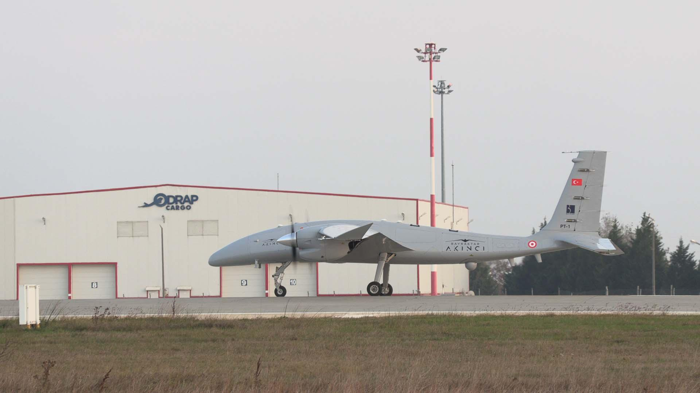
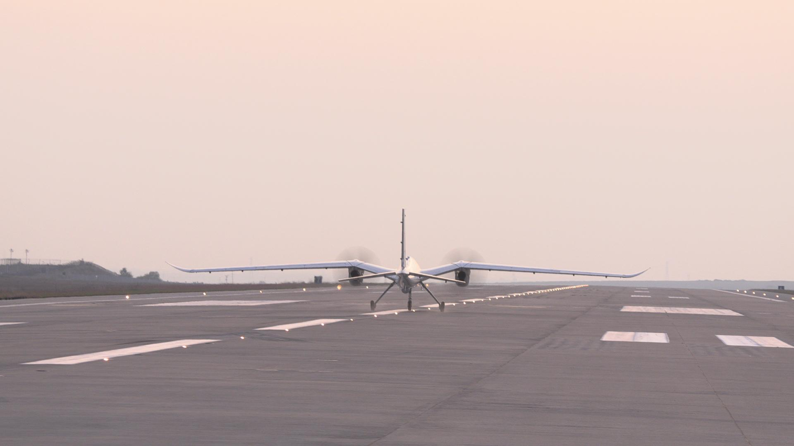

Genel Bilgi
Bayraktar AKINCI, Baykar tarafından geliştirilen yüksek irtifa uzun havada kalışlı taarruzi insansız hava aracı sistemidir. Platform; keşif, gözetleme, istihbarat, elektronik harp, hava-yer taarruzu ve stratejik görevler için tasarlanmıştır.
Baykar’ın resmî tanıtımına göre AKINCI, gelişmiş yapay zekâ destekli aviyonikler, SATCOM destekli görüş hattı ötesi haberleşme, AESA radar entegrasyonu ve geniş mühimmat uyumluluğu ile taktik SİHA sınıfının üzerinde konumlanan bir sistemdir.
Platform; yüksek faydalı yük kapasitesi, uzun operasyon menzili, yüksek irtifa performansı ve çok sayıda milli mühimmat taşıyabilmesi sayesinde stratejik görevlerde de kullanılabilecek bir İHA çözümü sunmaktadır.



Teknik Özellikler
| Platform Sınıfı | Taarruzi İHA / UCAV |
| Üretici | Baykar |
| Görev Profili | Keşif, gözetleme, istihbarat, hassas vuruş, elektronik harp, hava-yer taarruzu |
| Uzunluk | 12.2 m |
| Kanat Açıklığı | 20 m |
| Yükseklik | 6.1 m |
| Azami Kalkış Ağırlığı | 6.000 kg |
| Toplam Faydalı Yük | 1.500 kg |
| İç Faydalı Yük | 400 kg |
| Harici Faydalı Yük | 950 kg |
| Motor Konfigürasyonu | Çift turboprop motor |
| Motor Tipi | 2 × AI-450T |
| Toplam Motor Gücü | 2 × 450 hp |
| Seyir Hızı | 150 knot |
| Azami Hız | 195 knot |
| Servis Tavanı | 40.000 ft |
| Operasyon İrtifası | 30.000 ft |
| Havada Kalış | 24+ saat |
| Operasyon Menzili | 6.000 km |
| Haberleşme | LOS & BLOS |
| Uydu Haberleşmesi | SATCOM destekli görüş hattı ötesi görev |
| Veri Linki | Gerçek zamanlı görev verisi ve görüntü aktarımı |
| Otopilot | 3 yedekli aviyonik sistem mimarisi |
| Yapay Zekâ Sistemleri | Gelişmiş yapay zekâ destekli aviyonikler |
| Uçuş Yeteneği | Tam otomatik taksi, kalkış, seyir, iniş ve park |
| Seyrüsefer | Gelişmiş otonom seyrüsefer ve görev yönetimi |
| Radar | AESA radar entegrasyonu |
| Elektro-Optik Sistem | EO/IR keşif ve hedefleme sistemi |
| SAR Radar | Sentetik açıklıklı radar desteği |
| Hava-Hava Radar Yeteneği | Hava hedef tespiti ve takip için radar entegrasyon altyapısı |
| Elektronik Destek | Sinyal istihbaratı ve elektronik destek sistemleri |
| Mühimmat İstasyonları | 8 harici + 2 dahili istasyon |
| Hava-Yer Füze / Bomba Uyumu | MAM-L, MAM-C, Teber-81, Teber-82, LGK-81, LGK-82, HGK-82, KGK-82, İHA-230, Çakır, SOM türevi sınıflar |
| Hava-Hava Mühimmat Uyumu | Gökdoğan, Bozdoğan entegrasyon kabiliyeti duyurulmuştur |
| Tanksavar / Akıllı Mühimmat | UMTAS / L-UMTAS sınıfı entegrasyon altyapısı |
| Yakın Hava Desteği | Hassas vuruş ve derin taarruz görevlerine uygun |
| Radar İzi / Operasyonel Yaklaşım | İnsansız yapıda yüksek beka ve riskli görevlerde kullanılabilirlik |
| Görev Rolleri | ISR, deniz devriyesi, stratejik gözetleme, hassas vuruş, elektronik harp, uzun menzilli taarruz |
| Öne Çıkan Özellik | Yüksek irtifa, yüksek faydalı yük, SATCOM ve çok geniş mühimmat yelpazesini aynı platformda birleştiren stratejik SİHA |